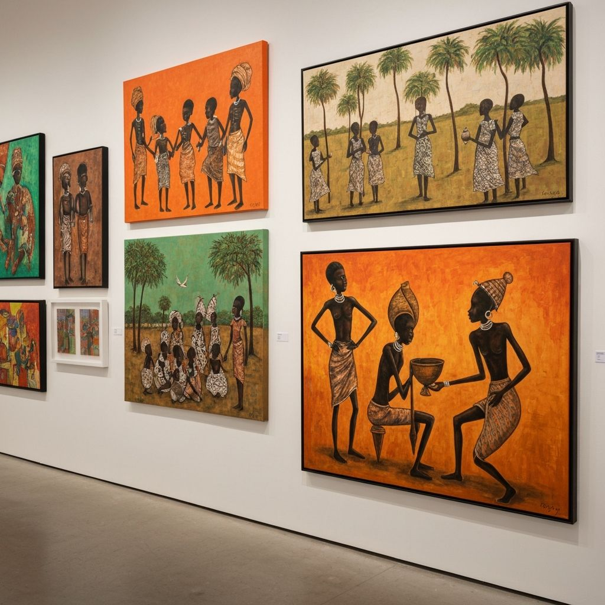
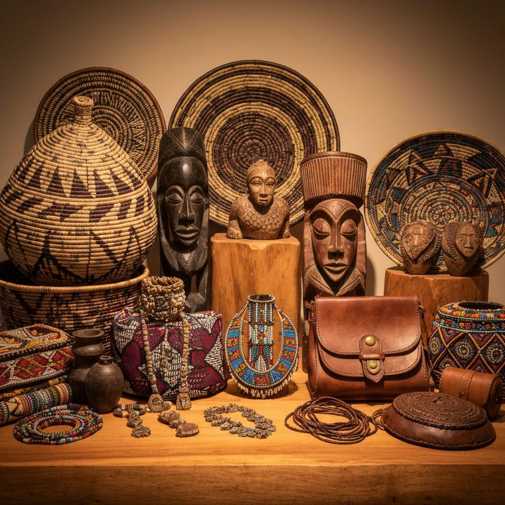
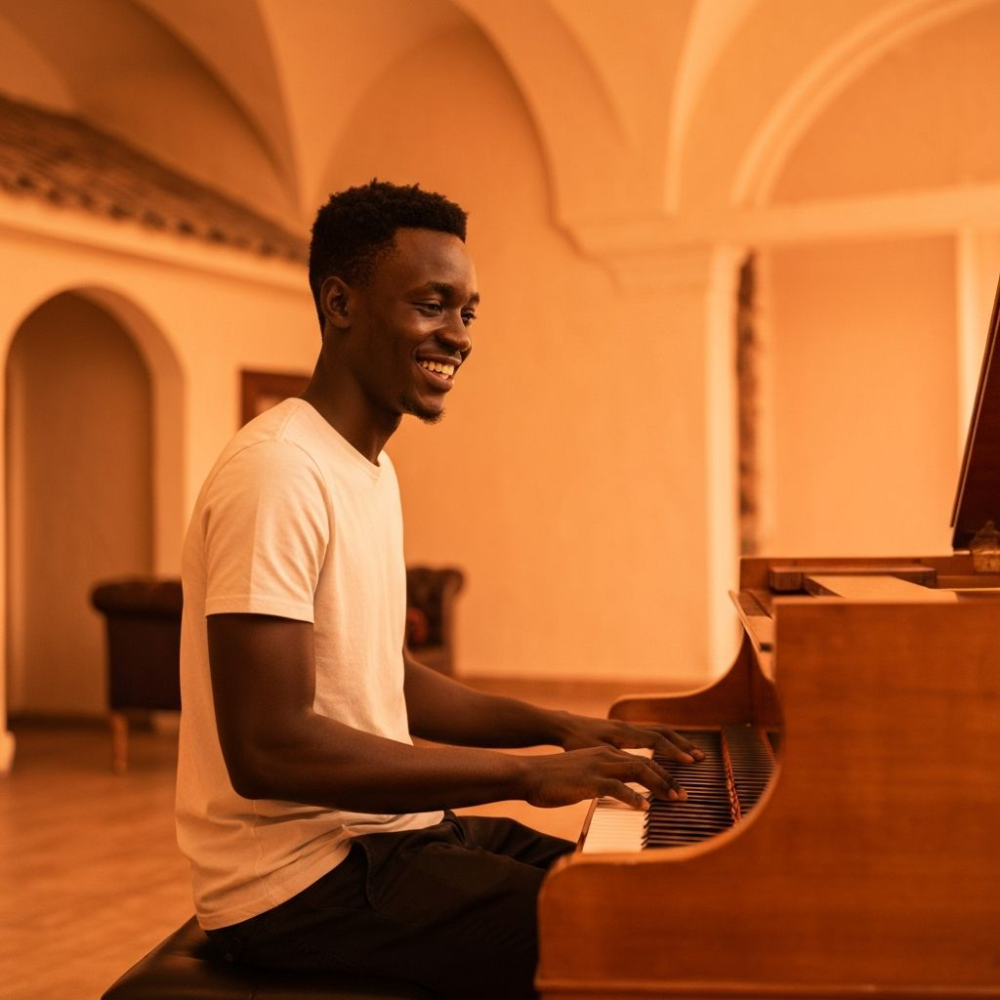
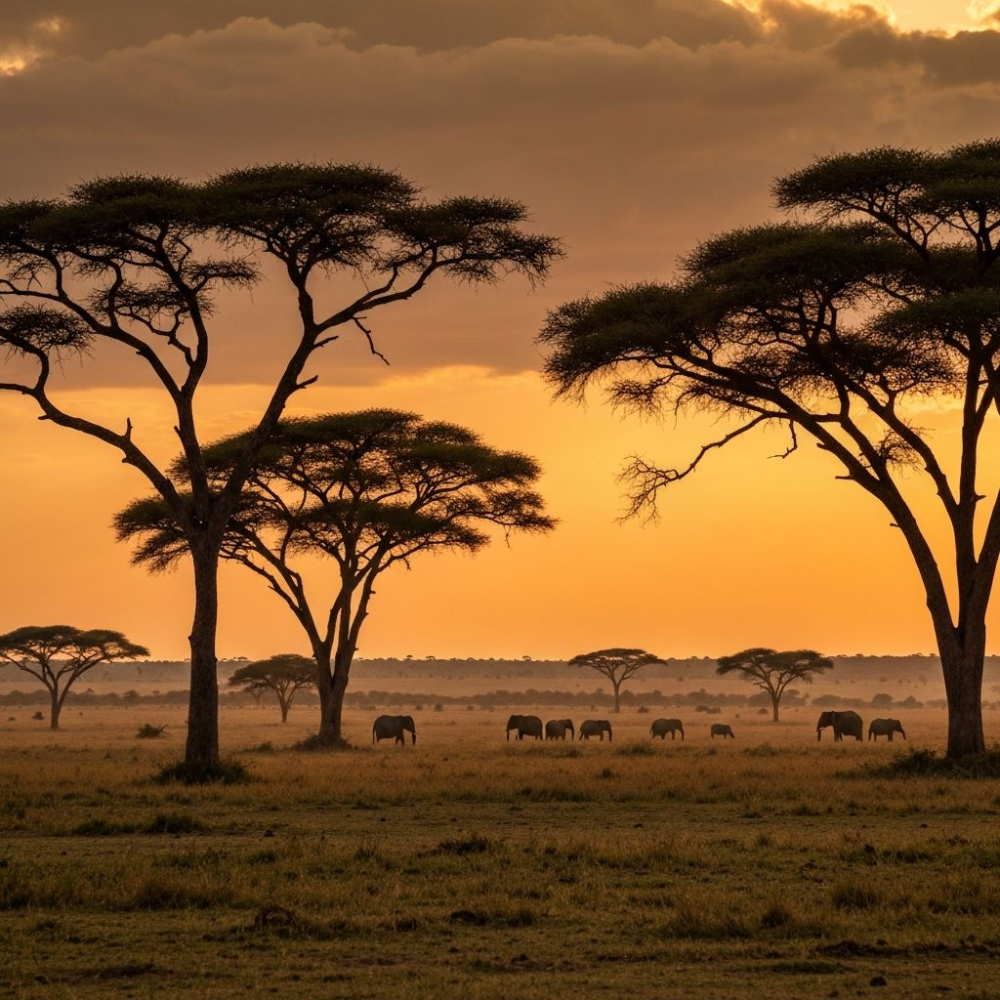

Featured Artist
Sarah K.
Visual Artist • Kampala, Uganda
Sarah creates stunning visual narratives that bridge the gap between traditional African motifs and modern abstract expressionism. Her work has been featured in galleries across East Africa and now brings her unique perspective to the Georgian market.
Her primary medium is oil on canvas, often incorporating recycled materials to comment on environmental sustainability.
Inquire About Work



